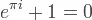

Blog · May 7, 2012
Be Inspired on Quora
How do you discover the web?
I’ve become a big fan of Quora, a Socratic social network. In the words of its founder, Adam D’Angelo:
When you want to know more about something, Quora delivers you answers and content from people who share your interests and people who have first-hand knowledge — like real doctors, economists, screenwriters, police officers, and military veterans. On Quora, it’s easy to create a personalized homepage of everything you want to know about by following topics, questions, people and boards.
UCSD’s Neuroscience Department shared Quora with me on Twitter about a year ago. Yes, that’s right. Neuroscience labs are on Twitter. Follow some. But back to Quora.
If you already use it, do so more frequently. And connect with me.
If you don’t use Quora yet, it’s pretty simple. Like Twitter, you follow people and they can follow you back. Link with Facebook and your “likes” automatically become Topics you follow. This means that when someone adds a question to a topic you follow, it shows up in your feed. You can also follow questions. Play around with Quora.
Ask questions.

Add and explore answers.

Shuffle and discover random and hilarious questions, like

Create boards.
Today I built “Be Inspired” featuring ongoing questions like
- What is the most badass acient city?
- What is the most enlightening TEDTalk?
- What is the most phenomenal moment in sports history?
- What is the most beautiful equation?


Quora rocks.
Share links to your favorite Quora questions in the comments. Add the most delightful questions to Be Inspired.
Amy
First published on my old blog, amyrobinson.wordpress.com, May 7, 2012.